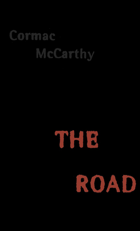

The Illustrated Man
by Ray Bradbury
"In an ingenious framework to open and close the book, Bradbury presents himself as a nameless narrator who meets the Illustrated Man--a wanderer whose entire body is a living canvas of exotic tattoos. What's even more remarkable, and increasingly disturbing, is that the illustrations are themselves magically alive, and each proceeds to unfold its own story"

Circe
by Madelline Miller
"In the house of Helios, god of the sun and mightiest of the Titans, a daughter is born. But Circe is a strange child--neither powerful like her father nor viciously alluring like her mother. Turning to the world of mortals for companionship, she discovers that she does possess power: the power of witchcraft, which can transform rivals into monsters and menace the gods themselves."

The Picture of Dorian Gray
by Oscar Wilde
"Combining elements of the Gothic horror novel and decadent French fiction, the book centers on a striking premise: As Dorian Gray sinks into a life of crime and gross sensuality, his body retains perfect youth and vigor while his recently painted portrait grows day by day into a hideous record of evil, which he must keep hidden from the world."

The Road
by Cormac McCarthy
"A father and his son walk alone through burned America. Nothing moves in the ravaged landscape save the ash on the wind. It is cold enough to crack stones, and when the snow falls it is gray. The sky is dark. Their destination is the coast, although they don't know what, if anything, awaits them there. They have nothing; just a pistol to defend themselves against the lawless bands that stalk the road, the clothes they are wearing, a cart of scavenged food—and each other."